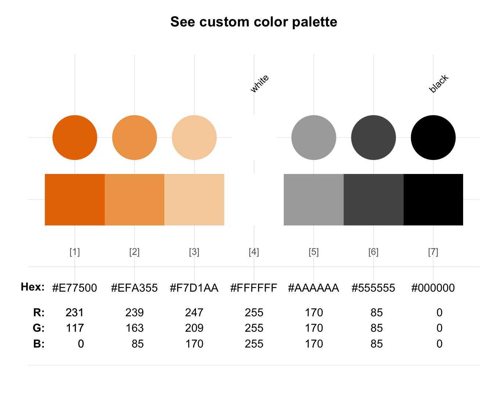
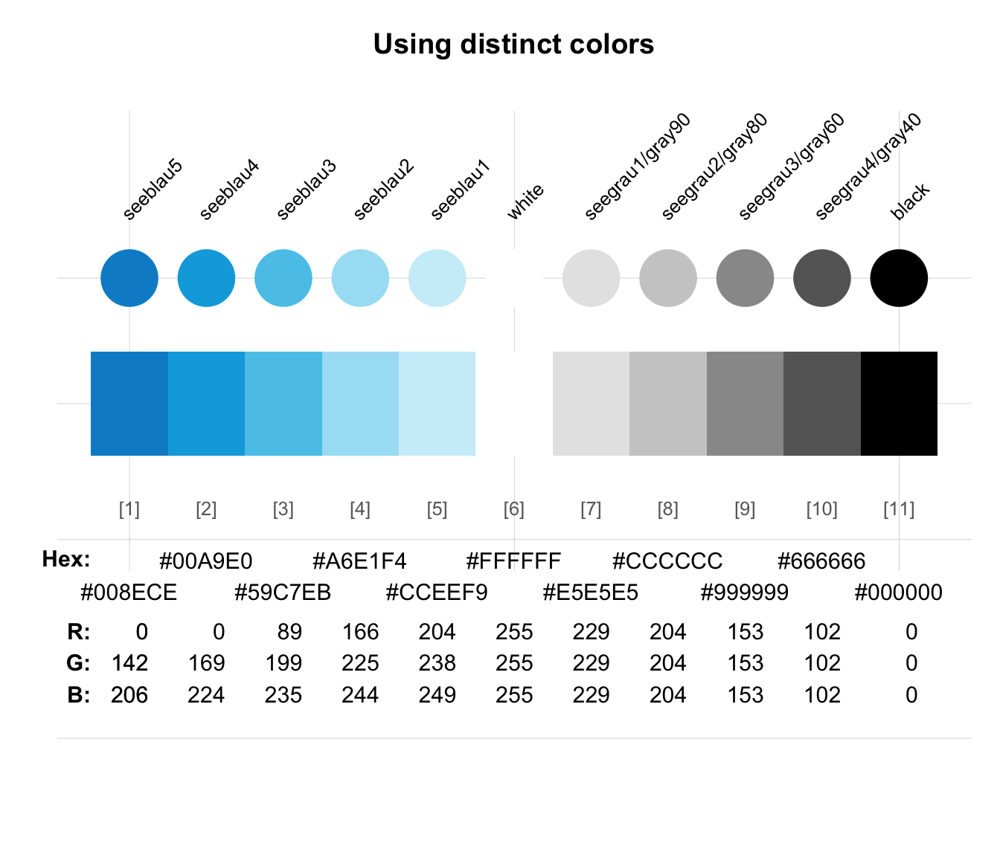
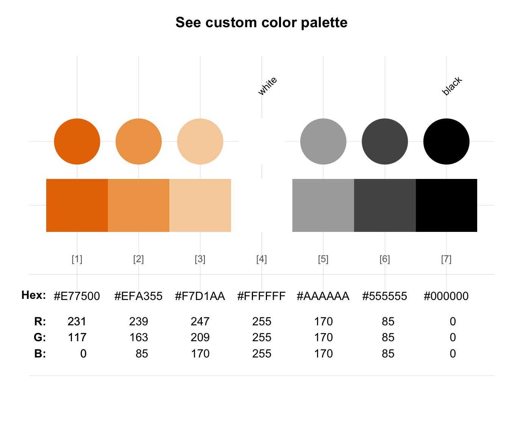
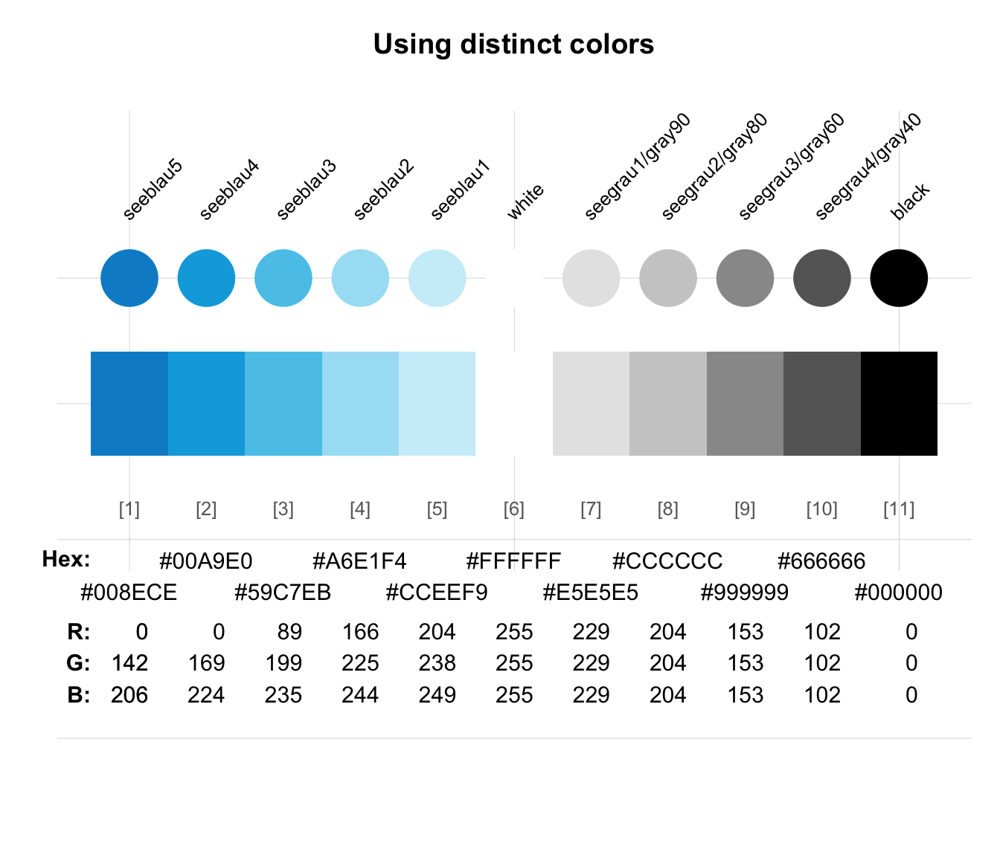

usecol allows using a color or color palette pal (e.g., for plotting).
usecol(
pal = pal_unikn,
n = "all",
alpha = NA,
distinct = FALSE,
use_names = FALSE,
use_col_ramp = FALSE
)Arguments
- pal
A color palette (as a vector of colors or color palettes). Default:
pal = pal_unikn.- n
An integer value specifying the desired number of colors from the palette. Default:
n = "all"(i.e., use all colors of a color palette). For the palettes defined by unikn,nis set to a pre-defined selection of colors if the desired number of colors is smaller than the available number. For all other palettes and values ofnlarger thanlength(pal),ncompresses or extends the palette usingcolorRampPalette.- alpha
A factor modifying the opacity alpha (as
alpha.finadjustcolor) to a value in[0, 1]. Default:alpha = NA(i.e., no modification of opacity).- distinct
Boolean: Return only visually distinct colors? Default:
distinct = FALSE(i.e., include duplicate colors).- use_names
A logical value indicating whether colors should be returned as a named vector. Default:
use_names = FALSE, for compatibility withggplot.- use_col_ramp
A logical value specifying whether the default of using pre-selected colors should be overridden and
colorRampPaletteshould be used to processn. Default:use_col_ramp = FALSE.
Value
A (named) vector of colors (of type character).
Details
usecol also allows modifying and combining color palettes in various ways.
See also
seecol for viewing and comparing color palettes;
simcol for finding similar colors;
newpal for defining new color palettes;
grepal for finding named colors;
shades_of to defining shades of a given color;
ac for adjusting color transparency;
pal_unikn for the default uni.kn color palette.
Other color functions:
ac(),
demopal(),
grepal(),
newpal(),
seecol(),
shades_of(),
simcol()
Examples
usecol(pal = pal_unikn, n = "all") # default color palette
#> [1] "#008ECE" "#00A9E0" "#59C7EB" "#A6E1F4" "#CCEEF9" "#FFFFFF" "#E5E5E5"
#> [8] "#CCCCCC" "#999999" "#666666" "#000000"
usecol(pal = pal_unikn, n = 4) # selecting n dedicated colors
#> [1] "#00A9E0" "#A6E1F4" "#FFFFFF" "#000000"
usecol(pal = pal_unikn, n = 20) # extending color palette
#> [1] "#008ECE" "#009CD7" "#04AAE0" "#33BAE6" "#61C9EB" "#89D7F0" "#ABE3F4"
#> [8] "#C0E9F7" "#D6F1FA" "#F1FAFD" "#F8F8F8" "#EAEAEA" "#DDDDDD" "#CFCFCF"
#> [15] "#B9B9B9" "#9E9E9E" "#838383" "#686868" "#353535" "#000000"
# Mixing a new color palette:
pal_1 <- usecol(pal = c(rev(pal_seeblau), "white", pal_pinky))
seecol(pal_1)
 # Mixing and extending a color palette:
pal_2 <- usecol(pal = c(rev(pal_seegruen), "white", pal_bordeaux), n = 20)
seecol(pal_2)
# Mixing and extending a color palette:
pal_2 <- usecol(pal = c(rev(pal_seegruen), "white", pal_bordeaux), n = 20)
seecol(pal_2)
 # Defining and using a custom color palette:
pal_princeton_1 <- c("#E77500", "white", "black")
names(pal_princeton_1) <- c("orange_w", "white", "black")
pal_3 <- usecol(pal_princeton_1, n = 7)
seecol(pal_3)

# Removing visual duplicates:
usecol(c("black", "#000000", "gray", "grey", "red", "red1"), distinct = TRUE)
#> [1] "black" "gray" "red"
seecol(usecol(c(pal_unikn, pal_seeblau), distinct = TRUE), title = "Using distinct colors")

# Defining and using a custom color palette:
pal_princeton_1 <- c("#E77500", "white", "black")
names(pal_princeton_1) <- c("orange_w", "white", "black")
pal_3 <- usecol(pal_princeton_1, n = 7)
seecol(pal_3)

# Removing visual duplicates:
usecol(c("black", "#000000", "gray", "grey", "red", "red1"), distinct = TRUE)
#> [1] "black" "gray" "red"
seecol(usecol(c(pal_unikn, pal_seeblau), distinct = TRUE), title = "Using distinct colors")
